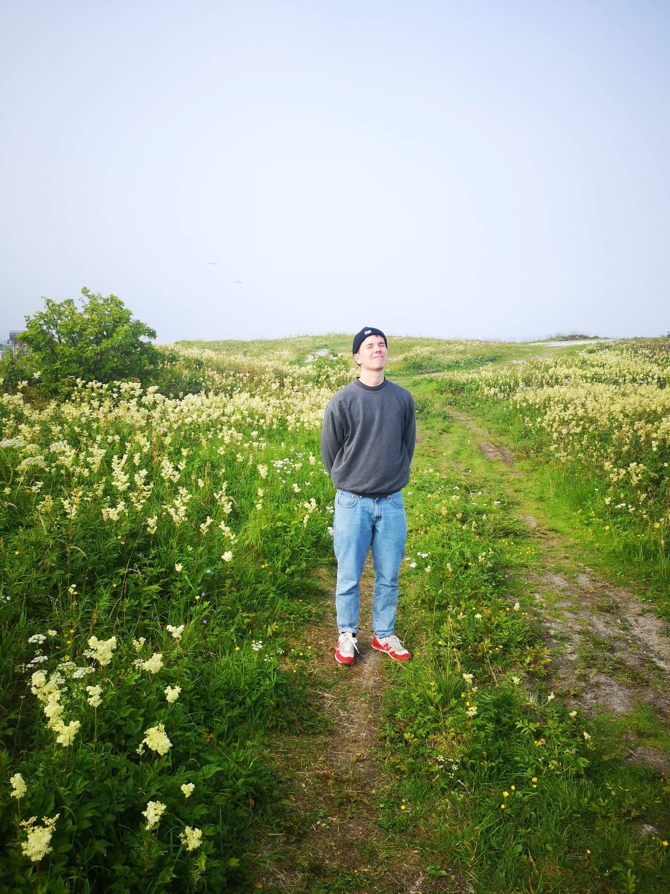

<div class="aboutme-page-container">
  <div class="profile">
    <TimeLine class="profile__description"/>
    
  
    <!-- <h2 class="profile__description">
      I'm a Computer Science student @ Umeå University, where I'm currently in my 3rd and final year.<br><br>
      Programming is something that came into my life at a pretty late stage, but I've taken a massive liking to it.<br><br>
      Alongside my studies, I work as a teaching assistant at various programming courses at the university. These courses include:<br><br>
      - <span style="cursor: pointer" @click="linkToCourse('https://www.umu.se/utbildning/kurser/datastrukturer-och-algoritmer-c/')">Datastructures and Algorithms</span><br>
              - <span style="cursor: pointer" @click="linkToCourse('https://www.umu.se/utbildning/kurser/objektorienterad-programmeringsmetodik/')">Objective-Oriented Programming</span><br>
              - <span style="cursor: pointer" @click="linkToCourse('https://www.umu.se/utbildning/kurser/programmeringsteknik-med-c-och-matlab/')">Programming in C and MatLab</span><span><br>
              - <span style="cursor: pointer" @click="linkToCourse('https://www.umu.se/utbildning/kurser/imperativ-programmering-c/')">Imperative Programming in C</span> <br>
              - <span style="cursor: pointer" @click="linkToCourse('https://www.umu.se/utbildning/kurser/applikationsutveckling-i-java/')">Application Development in Java.</span>
              </span>
      </h2> -->
  </div>
</div>